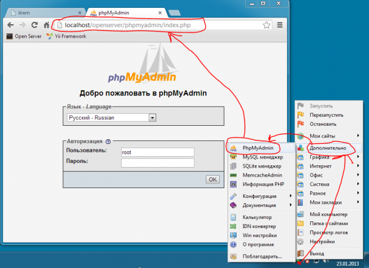
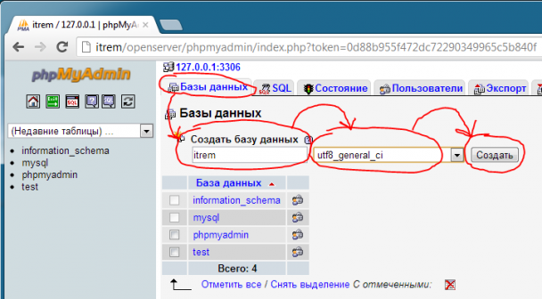
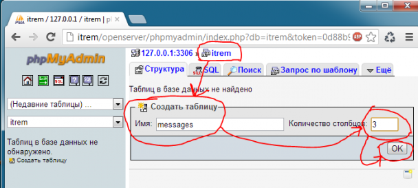
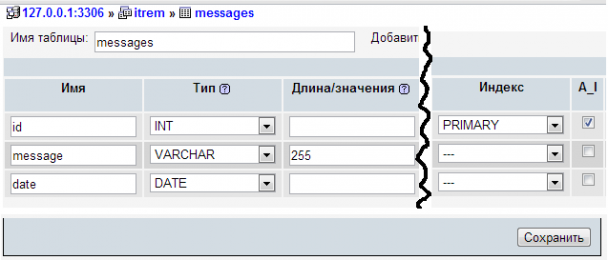

Создание базы данных
Запускаем Open Server, входим в phpmyadmin \он находится по адресу:
http://localhost/openserver/phpmyadmin/index.php (так же он доступен из контекстного меню OpenServer-а, пункт "Дополнительно>PhpMyAdmin")

Для авторизации используем такие данные:
- пользователь/пароль = root / -пустой пароль-
- пользователь/пароль = mysql / mysql
Можно использовать оба варианта, но рекомендуется второй способ, а именно mysql/mysql, т.к. для супер пользователя не применяются некоторые настроенные конфиги, например не устанавливается автоматически кодировка соединения с базой, поэтому при его использовании нужно дополнительно, в скриптах писать: mysql_query('SET NAMES "utf8"') либо использовать php функцию: mysql_set_charset('utf8').
Связанно это с тем, что суперпользователям не устанавливается кодировка, через параметр init-connect, который обычно прописывается в секции [mysqld], конфигурационного файла my.cnf В данный момент именно так настроен OpenServer.
Далее создать базу itrem

Перейти к созданию таблицы messages

Следующим шагом следует указать нужные поля, их значения

Создать таблицу при помощи кнопки "Сохранить"
Готово, база данных успешно создана